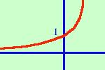

|
sviluppo y = ex  e' la funzione esponenziale a base naturale (di base il numero di Nepero e) ha le seguenti caratteristiche: la funzione e' sempre crescente e' sempre positiva ha un asintoto orizzontale nell'asse x in cui la curva tende a -∞ il punto 0,1 e' di intersezione fra la curva e l'asse delle y all'aumentare delle x oltre il punto 1 la curva cresce molto rapidamente E' la funzione che tende a +∞ piu' velocemente di tutte le altre funzioni |